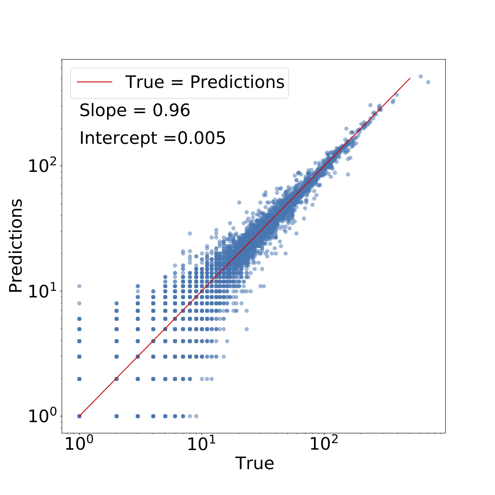

About
This project aims to predict the occupancy of dark matter halos with a central and satellite galaxies. Shown below is an illustration of a dark matter halo: a spherical region in the universe which contains dark matter. The diffuse, bluish glow is the dark matter halo. The spiral galaxy in the center is a central galaxy. The smaller blue dots are sub-halos that contain the satellite galaxies of the central galaxy.
For more technical details of the project, please visit my GitHub repository.

Main Objective
The most important goal of this project is:
- Classification: To predict the occupancy of the dark matter halo with a central galaxy.
- Regression: To predict the number of satellite galaxies in a dark matter halo.
Features
The features in this ML problem can be classified into 2 kinds:- Halo features which describe the properties of the halo:
- Mvir or Halo mass,
- Vmax or maximum circular velocity of the halo today,
- con or halo concentration which characterizes the density profile of the halo,
- a05 and a08 or the scale factor (related to the age of the unievrse) at which the halo reaches half and 80% of its current mass respectively,
- Vpeak or the maximum circular velocity in the history of the halo,
- zlastmerg and zfirstmerg or the redshift (related to the age of the universe) of last major merger and first major merger of the halo with another halo,
- mergnum or the total number of major mergers.
- Environment features that describe the properties of the region surrounding the halo:
- g1_25, g2_5, g5, g10 that describe the dark matter density field surrounding the halo. The numbers 1_25, 2_5, 5, 10 denote the increasing radius of the region containing the halo,
- alpha or tidal anisotropy which descibes whether the halo lies in a filament or in a more isotropically distributed region of dark matter.
Data Source
We are using halo data from the Millenium simulation. On the left hand column is provided a link to the various databases. We work with the Guo2010a data.
Machine Learning Pipeline

Data Preparation
The data set contains 8.7 million dark matter halos each containing a central galaxy. The total number of satellite galaxies is 10.4 million. However, not all halos and galaxies are important to us. For centrals, we use a halo mass cut-off to eliminate all halos below a certain mass. It is uncertain that such low mass halos can host galaxies. The total number of halos for the classification problem comes down to 4.6 million. Furthermore, we are interested in galaxies above a certain mass range. After imposing a cutoff mass for galaxies, the halos contain a little less than 750,000 central galaxies. Similarly for satellites, the halos contain 500,000 satellite galaxies.
We then divide the data set into 80% for training set, 10% for validation set and 10% for test set.
Exploratory Data Analysis
Let's look at the distributions of galaxy mass, halo mass, halo velocity and dark matter density or the environment.Notice that in the mass plots, smaller the mass (x-axes), more the number of galaxies (y-axes) which follows from the theory of structure formation in the universe - smaller mass objects form first which later condense into bigger objects in the universe. The small decrease in halo mass below mass of ~3 is probably an artefact of the limited resolution of the simulation. The halo velocity seems to follow a Gaussian distribution.
Model selection
For centrals, we start with the simplest model, Logistic Regression. We find that the F1 and F2 scores are 0.776 +/- 0.0004 and 0.776 +/- 0.0005 respectively. However, comparing the scores to the Random Forest Classifier which are 0.893 +/- 0.0002 and 0.892 +/- 0.0002 respectively, the random forest method clearly performs better. We therefore select random forest classifier as our final model.
Similarly for satellites, we start with the simplest model first - regularized linear regression. Even though Stochastic Ridge regression does a good job in predicting the number of satellites (R2 score of 0.9 +/- 0.004), an inherent property of linear regression models is that they can predict negative values. Ordinarily, this may not be a problem but in our problem satellite number must be zero or above. Therefore, linear regression isn't well suited to our problem.
Random forests are a better choice since by construction they cannot give negative values for satellite numbers. Moreover, the performance measures are better than linear regression scores (R2 score of 0.932 +/- 0.0036). We therefore select the random forest algorithm for our problem.
Note: An explanation of the random forest algorithm is out of the scope of this blog. Please see Section 2.2 of our paper for an introduction to random forests.
Fine tuning the random forest
We perform a grid search by varying the values of hyper-parameters - n_estimators or the number of decision trees in the forest, min_samples_leaf or the minimum number of samples in a node and max_depth or the decision tree depth. We use the 4-fold cross validation method to evaluate the F1 and R2 scores. For an illustration, we obtained the following contour plots which helped us select the best hyper-parameter values for centrals:

We therefore select (n_estimators, min_samples_leaf, max_depth) = (200, 10, 20) as the hyper-parameter values for the random forest classifier for central galaxies.
Similarly for satellites, we obtained the following contour plots:

We select (n_estimators, min_samples_leaf, max_depth) = (200, 1, 20) as the hyper-parameter values for the random forest regressor for satellite galaxies.
Final results
After fine tuning our models, we can see a few visualizations to check the performance of our model. For centrals, the confusion matrix will give us a clue of what fraction of halos which contained central galaxies (denoted by 1) were predicted to be unoccupied and vice-versa.

For satellites, we can look at the direct comparision between the predicted number of satellites vs. the true number. We can also fit a straight line and calculate how far from 1 and 0 the slope and intercept of the line is respectively.

Feature Importances
Let's look at what features decide the central galaxy occupancy the most.
The top 3 features are: Vmax or maximum circular velocity of the halo today, zlastmerg or the time of last major merger, and Vpeak or the maximum circular velocity in the history of the halo. However, we should check the level of correlation between the features before we can truely say if they are important. Let's look at the heatmap or correlation matrix of these features:
We see that Vmax and Vpeak are highly correlated. Therefore, we now conclude that the top 3 features are Vmax, zlastmerg, and a05 or the time at which the halo reached half its present mass.
One of the most surprising results from the machine learning work was that halo environment isn't a crucial feature determining central occupancy unlike previous semi-analytical studies.
Let's check the feature importances and feature correlation for satellites.
For satellites, the top 3 features are: Mvir or halo mass, g2_5 and g1_25 that describe the dark matter density field surrounding the halo. We noticed that for satellites the environment is an important feature consistent with previous studies in this field.
Further Details
After determining the top features for both centrals and satellites, we simplified our ML model by oncly including the top, uncorrelated features. For centrals, we made another model woth the top and environment features. Predicting galaxies from the ML models isn't enough for cosmological studies. We compared the clustering of the predicted galaxies with the true clustering. The clustering signal is basically related to the probability of finding a galaxy at a certain distance from the origin. Additionally, we compare the assembly bias of the predictions and the true galaxies. Assembly bias is related to the extent to which the assembly or merger history of the galaxies affects the clustering of galaxies.
For further discussion, please refer to our paper.
Conclusions
- We used ML to predict the dark matter halo occupation with a central galaxy and the number of satellite galaxies of a central galaxy. For centrals, we can predict halos which contain central galaxies upto ~91% accuracy. On the other hand, for halos that don't contain centrals, we predict them by ~98% accuracy.
- We predict satellite galaxies very well with R2 score of 0.932.
- Important: We found that for central galaxies, environment wasn't important in determining halo occupation.
- Important: Our ML approach takes 10 CPU hours as compared to 15,000 hours by previous semi-analytical models. This is an improvement by a factor of 1500!